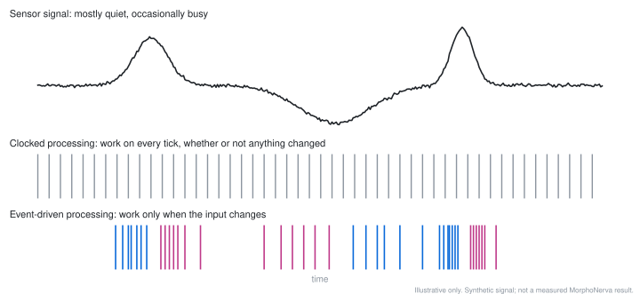
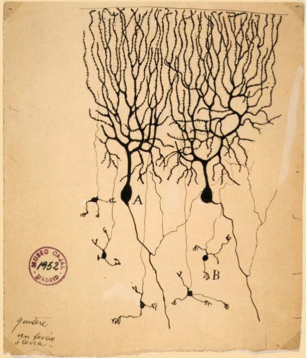
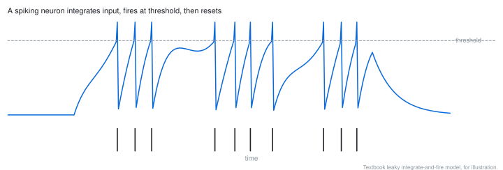
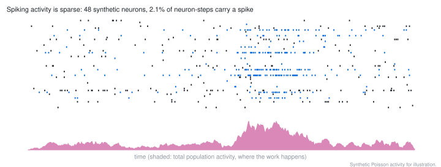
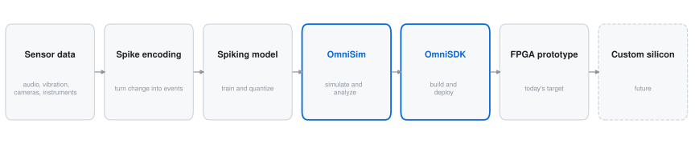
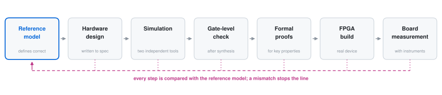

Technology
A full-stack, event-driven approach where computation scales with physical activity.
Why event-driven
Sensors are moving to the edge: onto machines, vehicles and robots, and into remote instruments. Many of them must listen or watch all the time, on a small power budget, far from a data centre. Event sensors already work this way: a conventional camera sends every pixel of every frame, while an event camera reports only the pixels that change.


Work that scales with activity
In an event-driven system, energy and work scale with activity, not with the clock. If a fraction a of inputs changes per step, clocked work is constant, while event-driven work is roughly c₀ + a·c₁. The engineering problem is keeping the fixed overhead c₀ small, and the sparsity real on real data, without giving up accuracy.

Spiking neural networks in two minutes
A biological neuron collects inputs from many others and fires a short pulse (a spike) only when enough arrive. Between spikes it does almost nothing. Spiking neural networks keep that behaviour in a simplified, digital form: each model neuron integrates its inputs over time and fires when it crosses a threshold. Across a network, only a small share of neurons is active at any moment.




The platform

We co-design models and circuits with one goal: the model we train is the model the hardware computes, with no hand-off step where accuracy silently changes.
How we check our work

What we don't publish
We describe our technology at block level. Implementation details stay private while the technology is under development.